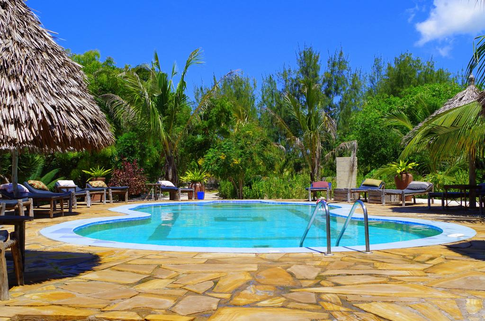
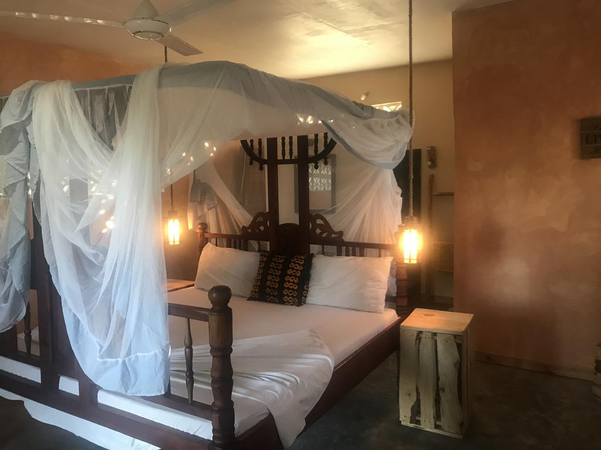

|  |
La piscine
Doté d'une piscine extérieure et d'un restaurant, le Mbuyuni Beach Village se trouve sur une plage de sable blanc, entre Paje et Jambiani. |
|  |
Les bungalows
Situées dans des bungalows, au cœur d'un jardin tropical, toutes les chambres disposent d'un mobilier local, d'un balcon, d'une moustiquaire, d'un bureau, d'un ventilateur de plafond ainsi que d'une salle de bains privative avec une douche et des serviettes. Superficie : 30 m² |